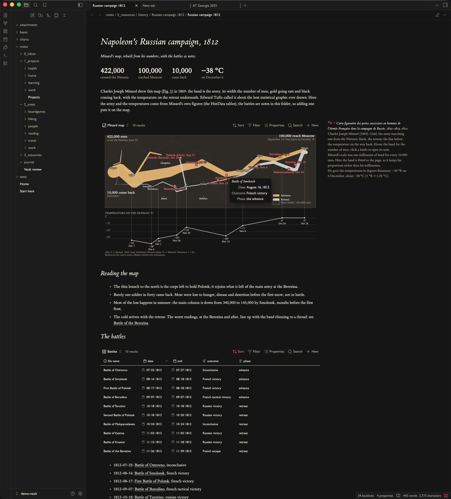
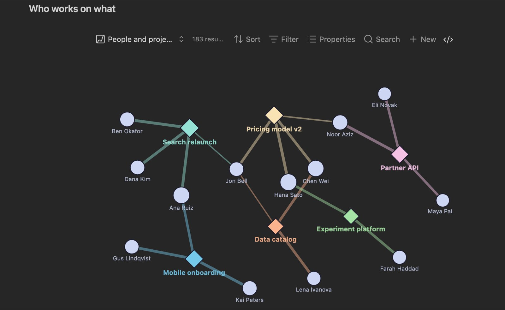
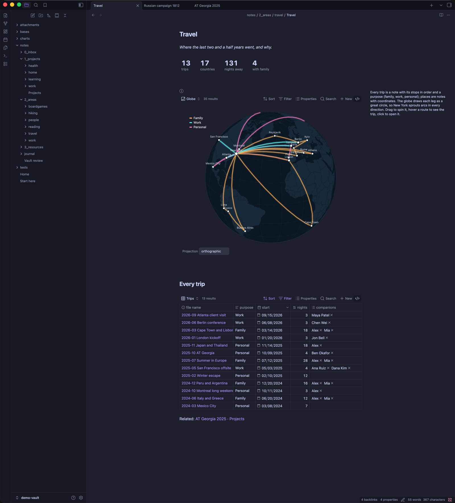
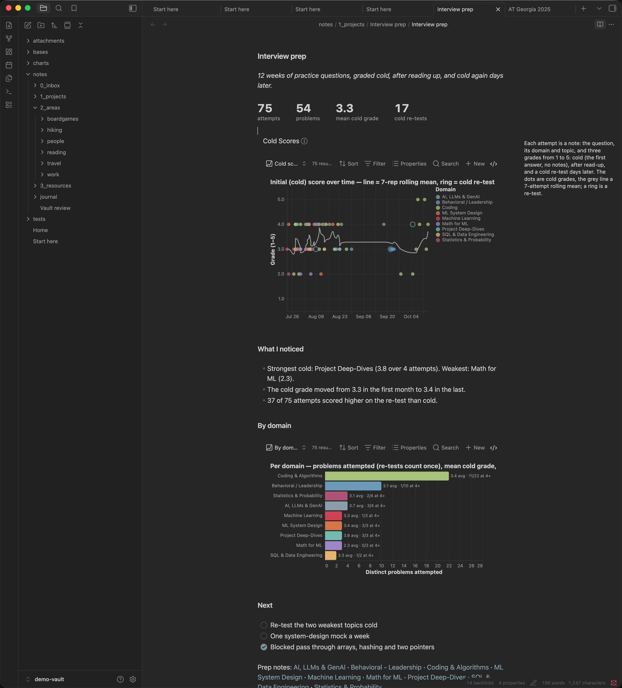
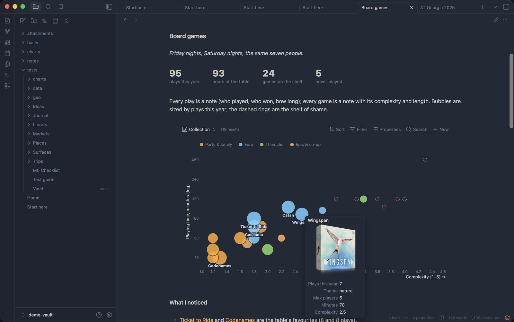
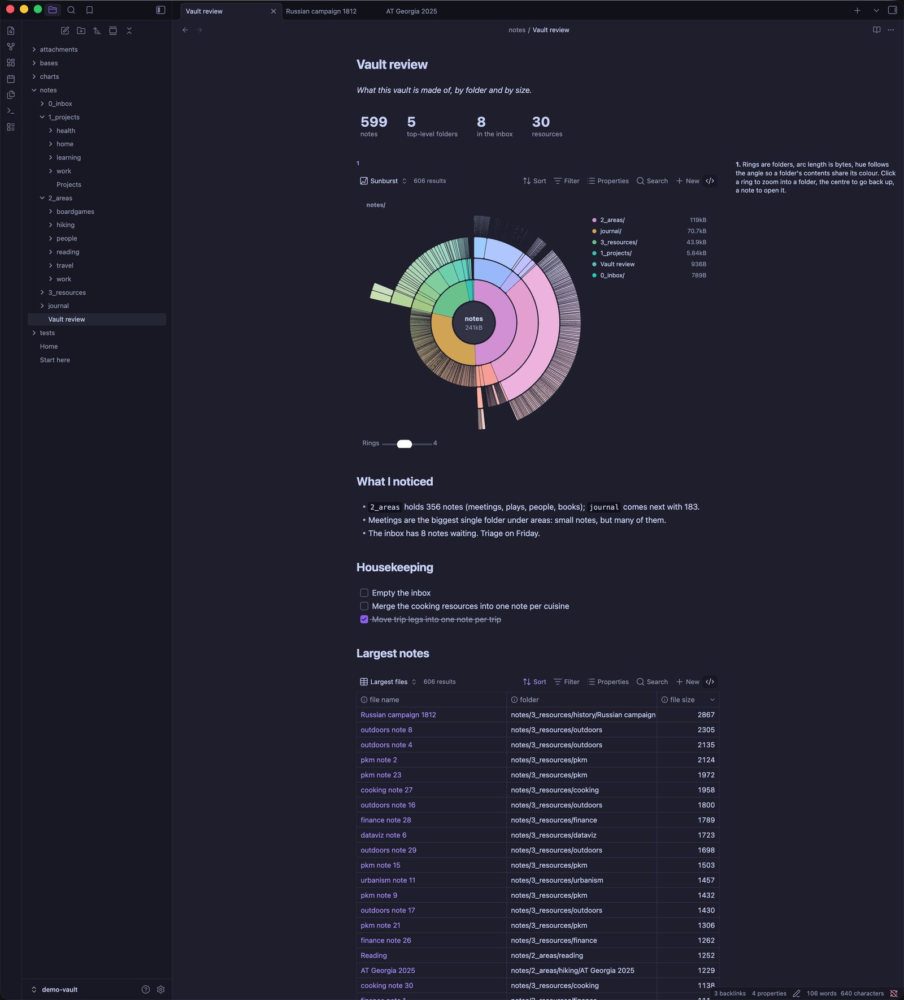
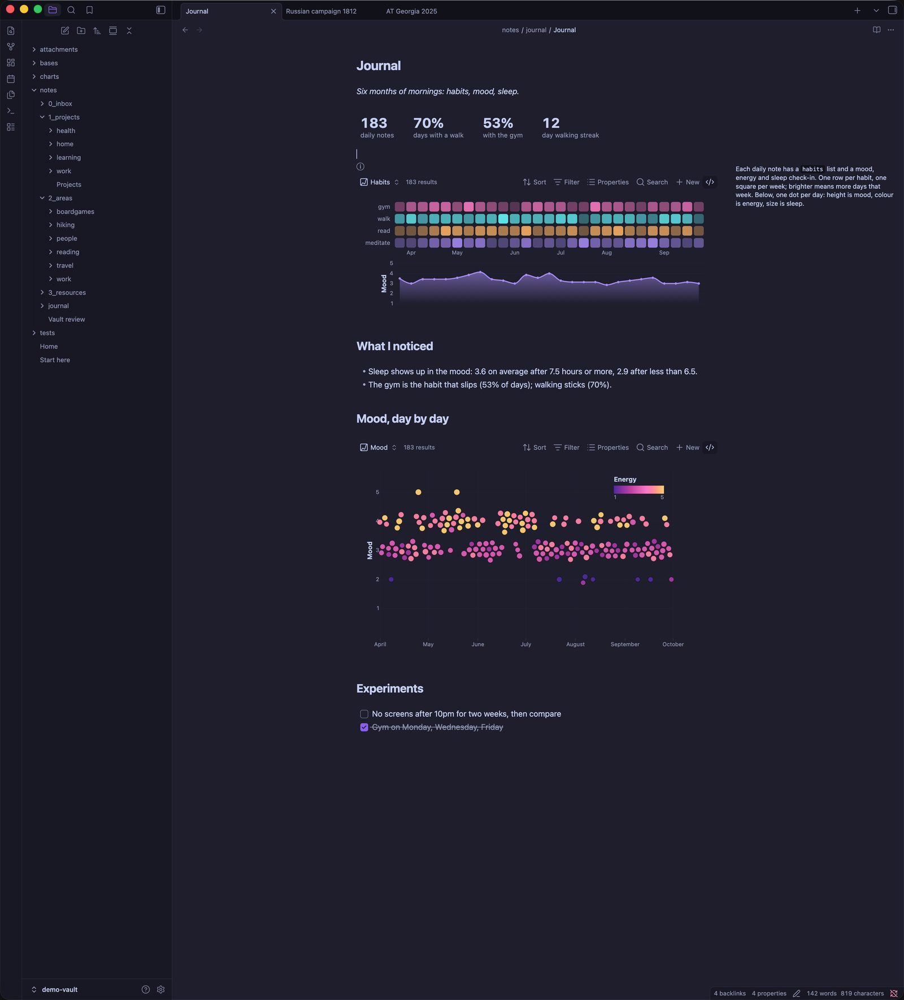
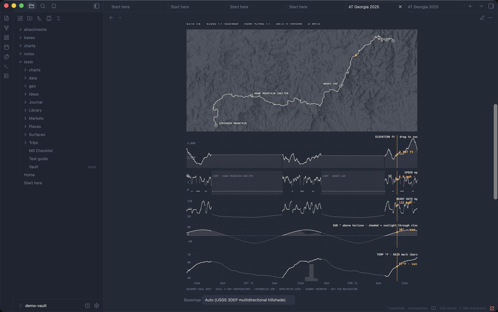

Your notes, visualised.
Agate turns any Obsidian base into a live visualisation. The base picks the notes; a chart draws them. Add a note, change a rating, filter the view, and the chart redraws. Under the hood it's Vega and Vega-Lite, a mature chart grammar with a large public gallery, so you never run out of chart types.
- Maps & globes
- Networks
- Timelines
- Headline numbers
- Flows
- Hierarchies
- Habit grids
- Linked dashboards


How it works
Build it once
Quick to start, and every chart is reusable.
You don't need to learn a chart library or a query language. Pick a recipe or ask an assistant, and the spec you end up with works in any base, any note and any vault.
Twelve recipes
Timeline, bars, lines, scatter, histogram, calendar heatmap, beeswarm, sankey, globe, link graph, arc diagram, sunburst. Agate asks which property goes where and writes the spec.
Prompt any LLM
Copy prompt for an LLM packs your base's properties and sample rows with the rules Agate needs. Describe the chart you want, then paste back the spec.
One spec, many views
The same file can back a filtered view, a grouped view and an embed in a daily note. Put it in a note template and every new note gets the chart.
The toolbar drives it
Filter, sort, group and show or hide properties from the Bases toolbar. The chart follows, and you don't edit the spec.
Portable, plain Vega
Specs are ordinary Vega and Vega-Lite JSON. Borrow from the official galleries, prototype in the online Vega editor, share with people who don't use Obsidian.
Every mark opens its note
Click a dot, a route or a node to open the note behind it. A chart works as a way to get around your vault.
Made for: reading logs · journals and habits · trips · projects and people · hikes and workouts · collections · study plans · history notes · anything you keep as notes with properties.
What you can draw
Much more than bar charts.
Each of these is a real note in the demo vault, with a plain spec over ordinary notes. Click any picture for the full screenshot.


NetworksWho works on what, from your links
People and projects are notes; the [[links]] between them are edges. A force layout, coloured by property, with a slider that hides weak ties. A project timeline sits underneath, from the same notes.


MapsTrips on a globe you can spin
Trip notes list their stops; place notes carry coordinates. Every leg is a great circle.


Stats & countsHeadline numbers that stay true
Big numbers, a rolling mean and per-domain counts, all computed from the base. Add a note and they update. (Headline numbers are experimental.)


CollectionsPictures in tooltips
A board-game shelf by complexity and length. The tooltip shows the box art from each note's image property.


HierarchiesThe vault itself
A DaisyDisk-style sunburst of folders and files. Click a ring to zoom in, click a note to open it.
Your look
Matches your vault, or has a style of its own.
Charts take fonts and colours from your Obsidian theme and switch with light and dark mode. If you want a particular look, pick a theme per chart.


Obsidian
Follows your theme: a habit grid and mood line from daily notes.


Instrument
A monochrome readout for dense time series: three days on the Appalachian Trail over a hillshade.
Tufte
Serif type with the caption in the margin, for notes that read like essays.
Quickstart
Your first chart in five minutes.
Needs Obsidian 1.13 or later with the core Bases plugin turned on.
Install
Agate isn't in the community directory yet. With BRAT, add Casyfill/Agate. Or copy main.js, manifest.json and styles.css from the latest release into .obsidian/plugins/agate/, then enable Agate.
Pick a recipe
Open any base, add a view with the Agate chart layout and click Pick a recipe. Choose which property goes where, and you have a chart.
Put it in a note
Embed the view with ![[Books.base#Ratings]], or pull rows from a base into any spec:
```agate
spec: charts/ratings.vl.json
base: Library/Books.base
```Try the demo vault
Everything on this page ships in the repo as a made-up vault. Open it in Obsidian, change a note and watch the charts follow.
git clone https://github.com/Casyfill/Agate.git && cd Agate
npm install && make demo extras # build, link the plugin, fetch the themes
# then open the demo-vault folder as a vault in Obsidian